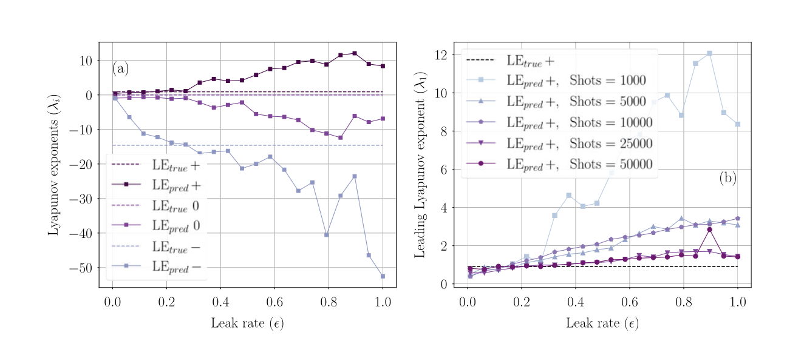
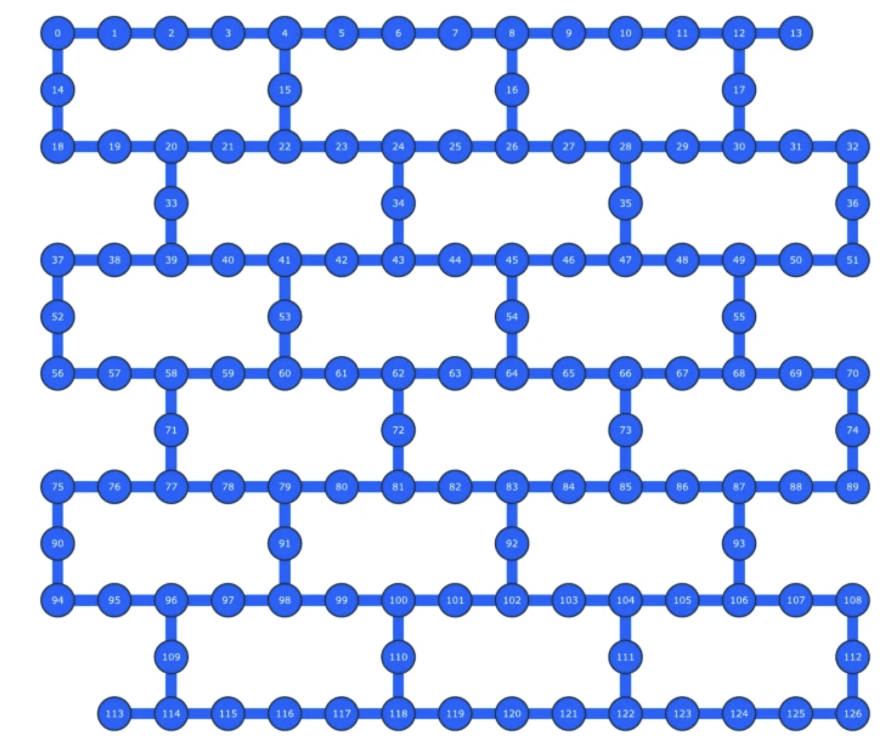
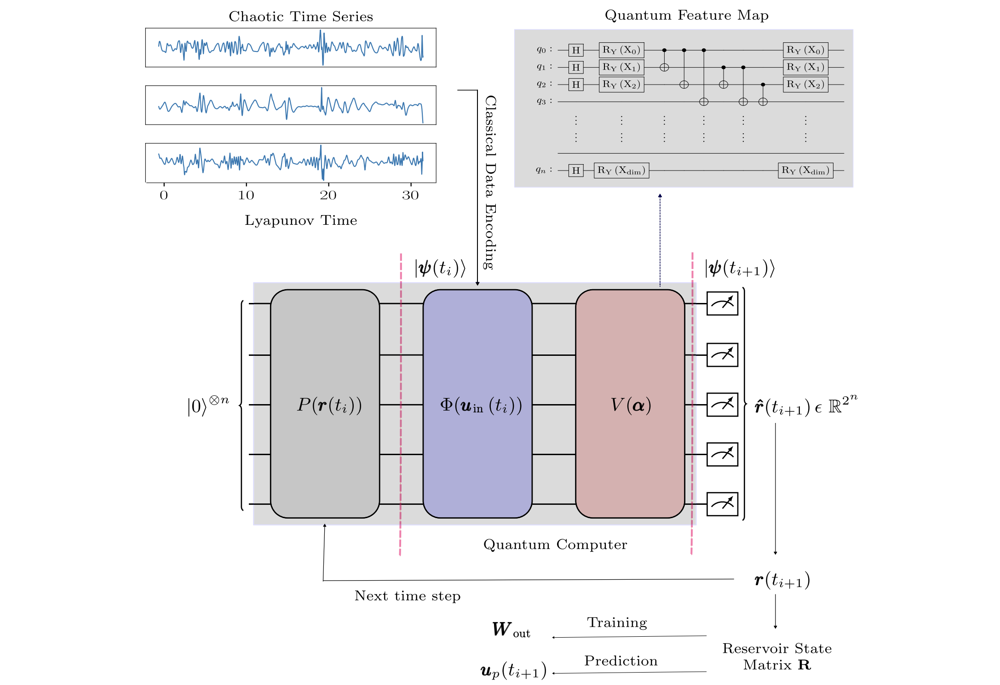

Proceedings of the Royal Society A Published: 29 October 2025
DOI: 10.1098/rspa.2025.0550

Quantum Machine Intelligence (2025) 7:31 Published: 27 February 2025
DOI: 10.1007/s42484-025-00261-9

Phys. Rev. Research 6, 043082 Published: 1 November, 2024
DOI: 10.1103/PhysRevResearch.6.043082